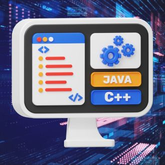

-
Frontend
Descrição
Frontend é a parte de um site ou aplicativo com a qual os usuários interagem diretamente. Inclui a interface visual e a experiência do usuário, desenvolvida com tecnologias como HTML, CSS e JavaScript Dica para entrar na carreira de Frontend: Comece aprendendo HTML, CSS e JavaScript por meio de tutoriais online e projetos práticos. Participe de comunidades de desenvolvedores e contribua para projetos open-source para ganhar experiência e visibilidade.
-
Backend
Descrição
O backend é a parte do sistema que lida com a lógica do servidor, banco de dados e APIs, processando dados e garantindo que tudo funcione corretamente para o frontend. Dica para Entrar na Carreira de Backend: Aprenda uma linguagem como Python ou Java e estude bancos de dados SQL.
-
FullStack
Descrição
Fullstack é a área de desenvolvimento que abrange tanto o frontend quanto o backend, permitindo ao desenvolvedor trabalhar em todas as partes de um aplicativo web, desde a interface do usuário até a lógica do servidor e banco de dados. Dica para Entrar na Carreira de Fullstack: Domine HTML, CSS e JavaScript para o frontend e uma linguagem de backend como Python ou Node.js. Estude bancos de dados e pratique construindo projetos completos.
-
Data Science

Descrição
Data Science é o campo que utiliza métodos estatísticos, algoritmos e tecnologia para extrair conhecimento e insights a partir de dados. Envolve coleta, limpeza, análise e visualização de dados para ajudar na tomada de decisões informadas. Dica para Entrar na Carreira de Data Science: Aprenda linguagens como Python ou R e estude estatística e análise de dados. Familiarize-se com ferramentas como Pandas, NumPy e SQL.
-
Mobile

Descrição
Desenvolvimento mobile é a criação de aplicativos para dispositivos móveis, como smartphones e tablets, usando tecnologias específicas como Swift para iOS e Kotlin para Android. Dica para Entrar na Carreira de Desenvolvimento Mobile: Aprenda Swift para iOS ou Kotlin para Android. Estude design de interfaces móveis e padrões de usabilidade. Crie aplicativos simples para ganhar prática e publique-os em lojas de aplicativos.
-
DevOps
Descrição
DevOps é uma metodologia que integra desenvolvimento (Dev) e operações (Ops) para melhorar a colaboração e eficiência na criação e implantação de software. Envolve automação, integração contínua e entrega contínua (CI/CD). Dica para Entrar na Carreira de DevOps: Aprenda ferramentas de automação como Jenkins, Docker e Kubernetes. Entenda conceitos de CI/CD e infraestrutura como código. Pratique configurando pipelines de automação e participe de comunidades de DevOps para trocar experiências e aprender com profissionais da área.